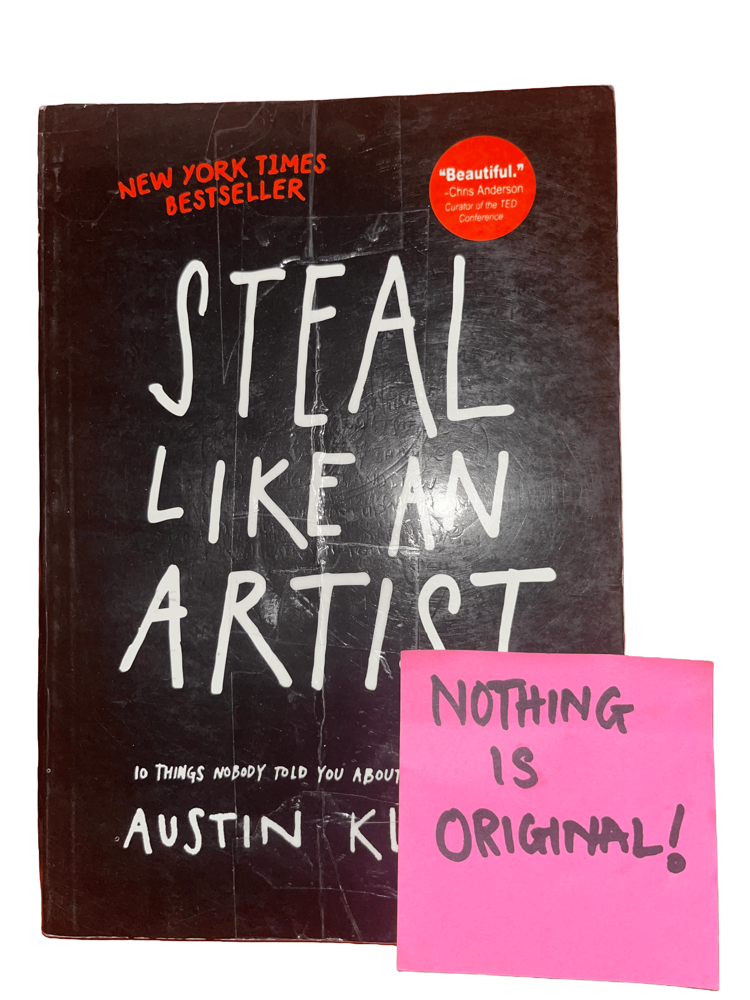
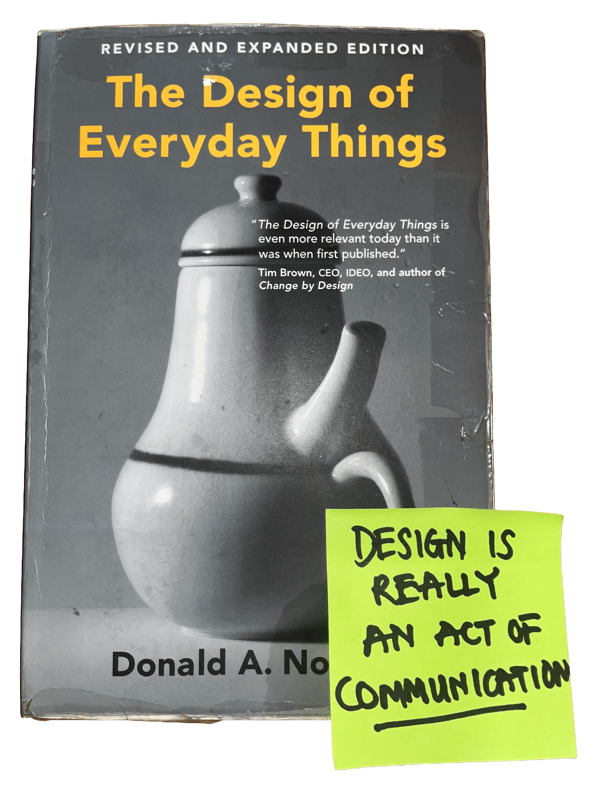
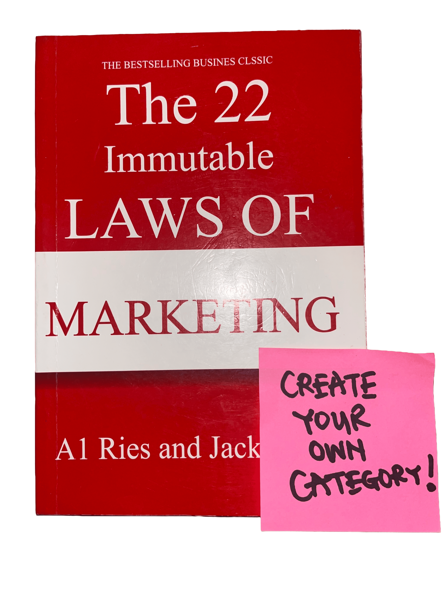
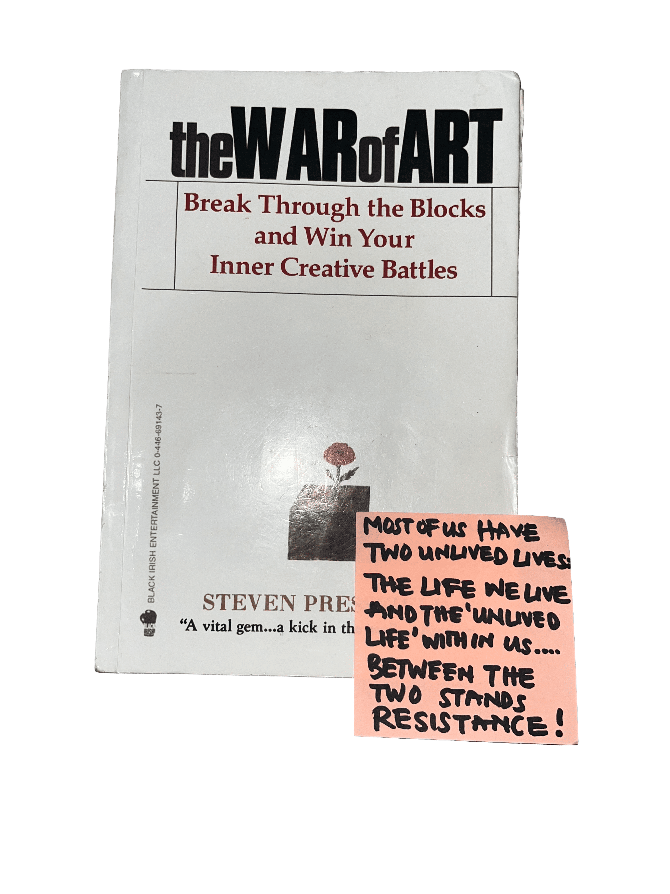
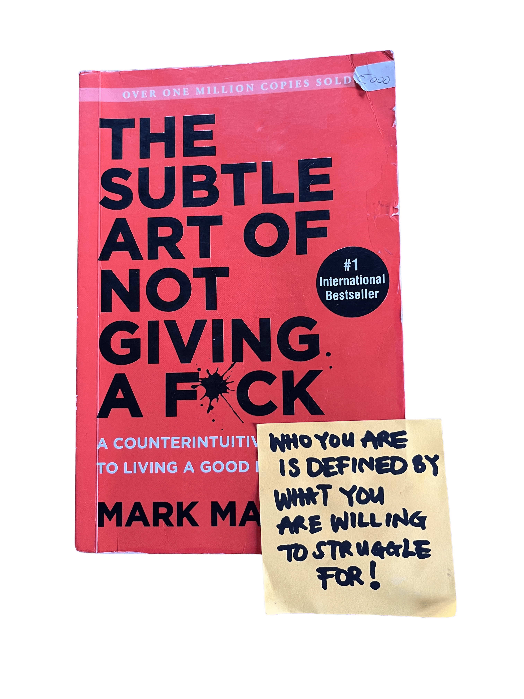

"For a Habit to be improved, it must be first Established"
-James Clear
“A reader lives a thousand lives before he dies. The man who never reads lives only one.”
“You will learn most things by looking, but reading gives understanding. Reading will make you free.”
“Reading is an exercise in empathy; an exercise in walking in someone else’s shoes for a while.”
“The whole world opened to me when I learned to read.”
The Best Books I've Read
-
Must Read
Atomic Habits
Habits form the foundation of our success or failure because, in many ways, we become what we repeatedly do. James Clear explains how small, consistent changes compound over time and introduces the four stages of habit formation: cue, craving, response and reward. He shows how to build good habits by making them obvious, attractive, easy and satisfying, while doing the opposite to break bad ones. One of the biggest lessons is that you don't rise to the level of your goals; you fall to the level of your systems. Best for: Anyone looking to break bad patterns and build intentional daily systems.
-
Favorite
The Psychology of Money
People have very different relationships with money, largely shaped by their upbringing, experiences, environment and the opportunities they've had. Morgan Housel uses 19 stories to show why people make different financial decisions and why what seems irrational to one person might make perfect sense to another. He also shares practical lessons on saving, investing, managing risk and building wealth. I honestly really enjoyed this one because it made me look at money and people's financial decisions differently.
-

FavoriteSteal Like an Artist
True creativity isn't about making something out of nothing, but learning from and building upon the work of others without plagiarising. Austin Kleon shares 10 rules for creativity, from collecting inspiration and starting before you feel ready to making time for hobbies and side projects. One idea I particularly liked was having two workstations: an analog space for unfiltered ideas and a digital one for execution. It's a reminder to create, experiment, share your work and not get too caught up in originality.
-
Favorite
The Alchemist
Santiago, a young shepherd from Spain, leaves his comfortable life to pursue a dream of finding treasure near the Egyptian pyramids. His journey to discover his Personal Legend represents what I see as a person's true purpose, beyond the expectations society places on them. The book reminded me of Stoic philosophy, particularly how fear, comfort and even love can sometimes keep us from pursuing growth. To me, it ultimately asks a simple question: would you choose self-actualisation or conformity? A beautiful book about following your dreams and finding your purpose.
-

Must ReadThe Design of Everyday Things
Bad design causes user frustration, not user stupidity. Don Norman explains how products should align with how people naturally think and interact with the world, rather than forcing people to figure out confusing interfaces. He also explores why errors happen, arguing that designers should build systems that make mistakes easy to recognise, reverse or prevent. It's a particularly useful read for understanding why good design should feel natural and why bad design often makes simple tasks unnecessarily difficult.
-
Must Read
Rich Dad Poor Dad
This is my go-to recommendation for anyone looking to build a foundation in financial literacy and take greater control of their finances. Through the contrasting financial lessons of his own father and his best friend's father, Robert Kiyosaki explains how money works and how wealth is built. One of his central lessons is understanding the difference between assets, which put money in your pocket, and liabilities, which take money out. It's a useful starting point for changing how you think about money, spending and wealth creation.
-

Must ReadThe 22 Immutable Laws of Marketing
This book is packed with lessons on how brands position themselves in the minds of consumers, from being first in a category to owning a particular word or idea. Ries and Trout use real-world examples to explain why marketing is often more about perception than the actual product. Some of the laws that stood out to me were the Law of Category, Law of Focus, Law of Opposite and Law of Sacrifice. Even if you're not a marketer, understanding how brands influence what people buy is incredibly useful. It's also made me more conscious of how businesses compete for our attention and money.
-
Read
Think and Grow Rich
This was my introduction to the idea that achievement begins with what you think and believe is possible. Despite the author's controversies and some ideas that feel dated, I prefer to separate the person from the work, and several of the principles still resonate with me. Chapters on Desire, Faith, Specialized Knowledge and Organized Planning stood out, although I found some of the claims around Autosuggestion, the Sixth Sense and sex transmutation questionable. I'd recommend it for motivation and perspective, but not as a practical, step-by-step guide to achieving your goals.
-
Read
This Is Marketing
You don't have to be a marketer to read this one. Seth Godin presents marketing as an act of service built around trust, empathy, consistency and creating value rather than manipulating people into buying. He explains how to find your smallest viable market: a specific group of people who genuinely care about what you're offering, rather than trying to appeal to everyone. My biggest takeaway was the importance of understanding your audience's fears, desires and worldview before trying to sell them anything.

ReviewedWar of Art
The War of Art explores the internal struggle that stops creative people from doing the work they know they should be doing. Pressfield calls this force Resistance, and describes how it shows up through procrastination, self-doubt, fear and other forms of avoidance. He encourages building routines, embracing failure and treating creative work with the seriousness of a profession rather than a hobby. It's a really good creative manual about overcoming the internal barriers that keep us from creating and pursuing meaningful work.
ReviewedRead People Like a Book
This isn't simply a manual for detecting lies; it's about understanding human behaviour through body language, facial expressions and other nonverbal cues. Patrick King explains the importance of establishing someone's baseline behaviour before interpreting changes in their movements or expressions. He also introduces personality frameworks like the Big Five (OCEAN) and explores the motivations behind people's actions. My biggest takeaway was the need to recognise our own biases, particularly confirmation bias and projection, and distinguish what we actually observe from what we assume.
Must ReadThe Richest Man in Babylon
Alongside Rich Dad Poor Dad, this is one of the two books I'd recommend to anyone interested in building a foundation in financial literacy. Through stories set in ancient Babylon, George Clason explains timeless principles of saving, investing, managing money and building wealth. What makes the book particularly useful is how simply it breaks down these ideas and makes them easy to understand and apply. It's a gem for anyone looking to understand money from first principles.

FavoriteSubtle Art of Not Giving a F*ck
Mark Manson argues that happiness isn't about avoiding problems but choosing the right struggles and taking responsibility for how we respond to life. He challenges the idea that we must always be positive, introducing the Backwards Law: constantly chasing positive experiences can leave us more anxious and dissatisfied. Other important lessons include accepting failure, questioning our sense of exceptionalism and recognising that our values determine what we give our time and energy to. My biggest takeaway is that our time and attention are limited, so we need to be selective about what deserves them.
ReviewedI Dared to Call Him Father
Bilquis Sheikh recounts her journey from a Muslim background to Christianity, describing the questions, experiences and personal struggles that gradually changed her understanding of God. What I appreciated most was the honesty with which she explores the personal cost of conviction and the courage it takes to question deeply held beliefs. You don't have to share her faith to appreciate the vulnerability involved in reconsidering something so fundamental to your identity. It's a thoughtful read about faith, truth, purpose and the courage to change.
Latest Video Review
Watch deep-dive breakdowns from my YouTube channel (@hiimrandycreates), or click any book on the shelf to cue up its review and key takeaways.